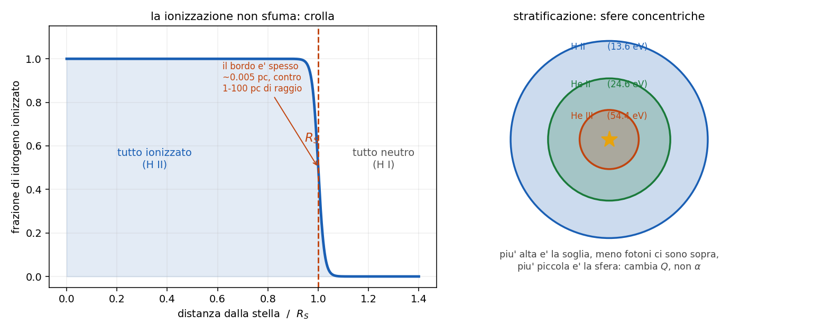

8 - La sfera di Stromgren
Dispensa: cap. 8 (pag. 99-110).
Capitolo a mattoncini: si costruisce l' equazione un pezzo per volta, e poi si legge il
risultato negli andamenti. Il bordo, alla fine, e' il pezzo che sorprende di piu'.
Nel capitolo 7 si e' fatto il bilancio fra ionizzazioni e ricombinazioni
in un punto. Adesso si guarda tutta la nube insieme e ci si fa la domanda geometrica:
una stella calda dentro una nube di idrogeno. Fin dove arriva la zona ionizzata?
1. Il quadro
Una stella molto calda, tipo una O o una B, immersa in una nube di idrogeno.
Il raggio della stella e' milioni di volte piu' piccolo di quello della nube, quindi per questo
conto la stella e' un punto che sputa fotoni ionizzanti in tutte le direzioni.
L' idea di Stromgren e' che si arrivi a una situazione stazionaria: c'e' una regione ionizzata
attorno alla stella, e la sua dimensione e' fissata da un equilibrio.
2. Il ragionamento
Bisogna partire da una cosa: un atomo per restare ionizzato ha bisogno di essere continuamente
ri-ionizzato, perche' altrimenti prima o poi ricattura un elettrone.
Quindi non si contano atomi, si contano tassi: quante ionizzazioni al secondo e quante
ricombinazioni al secondo.
$$(\text{fotoni ionizzanti emessi dalla stella al secondo}) = (\text{ricombinazioni al secondo in tutta la sfera})$$
Il raggio $R_S$ e' quello per cui i due numeri si pareggiano: dentro quel raggio la stella ce la fa
a tenere tutto ionizzato, fuori non ce la fa piu'.
3. Il lato sinistro
Il tasso di emissione di fotoni ionizzanti (energia sopra 13.6 eV) della stella si chiama $Q$ e si
prende cosi' com'e', in fotoni al secondo. E' un dato della stella.
4. Il lato destro
Si costruisce a partire da un pezzo gia' visto nel capitolo 5.5: le
ricombinazioni dirette sul livello $n$ sono
$$N_e N_p \alpha_n$$
Ma qui interessano le ricombinazioni su tutti i livelli, quindi si somma:
$$\sum_n N_e N_p \alpha_n = N_e N_p \sum_n \alpha_n$$
E questo e' il numero di ricombinazioni al secondo per cm$^3$. Per avere quelle di tutta la
sfera basta moltiplicare per il volume:
$$\frac{4}{3}\pi R^3 N_e N_p \sum_n \alpha_n$$
5. L'approssimazione "on the spot"
Adesso c'e' un passaggio che sembra un dettaglio tecnico ma non lo e'.
Vediamo cosa succede quando un elettrone ricombina finendo direttamente sul fondamentale
($n=1$): l' elettrone cade da libero fino a $-13.6$ eV, quindi emette un fotone da 13.6 eV, che
e' esattamente un fotone ionizzante.
Quel fotone viene subito riassorbito li' vicino e ionizza un altro atomo. Quindi:
$$13.6 \, eV + \text{neutro} \rightarrow \text{ionizzato} \rightarrow \text{neutro} + 13.6 \, eV$$
Il conto si pareggia: quella ricombinazione ha prodotto il fotone che serve a rifare la
ionizzazione che ha appena annullato. Netto: zero.
Quindi le ricombinazioni su $n=1$ non vanno contate, e la somma parte da $n=2$:
$$\alpha_B = \sum_{n \geq 2} \alpha_n$$
Questo si chiama on the spot approximation (il "sul posto" e' perche' si assume che quel fotone
venga riassorbito subito li', senza viaggiare).
Vale la pena dirlo: $\alpha_B$ si chiama caso B, e $\alpha_A$ (con dentro anche
$n=1$) e' il caso A. E' la stessa distinzione che c'e' dietro il valore 2.86 del decremento di
Balmer nel capitolo 5.5: anche li' si assume caso B. Nelle nebulose si usa
sempre il caso B, perche' i fotoni di Lyman non escono mai vivi.
6. La formula
$$Q = \frac{4}{3} \pi R_S^3 \, N_e N_p \, \alpha_B$$
e isolando il raggio:
$$R_S = \left( \frac{3 Q}{4\pi N_e N_p \alpha_B} \right)^{1/3}$$
Attenzione: la radice e' cubica, non quadrata. Viene dal volume della sfera, che va come
$R^3$.
6.1 Come si legge
Dipendenza da $Q$: debolissima.
$$R_S \propto Q^{1/3}$$
Se la stella emette mille volte piu' fotoni ionizzanti, il raggio cresce solo di dieci
volte. Ed e' ovvio a pensarci: il volume va come il cubo, quindi per raddoppiare il raggio serve
otto volte piu' roba.
Dipendenza dalla densita': piu' forte.
Assumendo $N_e \approx N_p = N$ (idrogeno puro completamente ionizzato):
$$R_S \propto N^{-2/3}$$
L' esponente e' $2/3$ e non $1/3$ perche' la densita' nella formula compare due volte: una per
gli elettroni e una per i protoni. Piu' e' densa la nube, piu' la sfera e' piccola: la stella
consuma i suoi fotoni piu' in fretta.
7. Il bordo
E qui c'e' la cosa che sorprende di piu'.
Verrebbe da pensare che la ionizzazione sfumi piano piano allontanandosi dalla stella. Invece no:
crolla di colpo.
| quanto | |
|---|---|
| raggio tipico della sfera | 1 - 100 pc |
| spessore del bordo | ~0.005 pc |
Il bordo e' quattro ordini di grandezza piu' sottile del raggio. Su scala della nebulosa e'
praticamente una superficie.
7.1 Perché è così netto: il conto
Lo spessore del bordo e' la distanza in cui $\tau$ passa da 0 a 1, ed e' il libero cammino medio
della capitolo 7:
$$L = \frac{1}{N \sigma} = \frac{1}{10 \times 6.3 \times 10^{-18}} \simeq 1.6 \times 10^{16} \; \text{cm} \simeq 0.005 \; pc$$
con $N = 10$ cm$^{-3}$ di idrogeno neutro e $\sigma = 6.3 \times 10^{-18}$ cm$^2$ (la sezione
d' urto per fotoni da 13.6 eV).
E piu' la nube e' densa, piu' il bordo e' sottile: a $N = 10^3$ cm$^{-3}$ viene $10^{-4}$ pc, cioe'
paragonabile al sistema solare.
7.2 Perché è così netto: il meccanismo
Il conto dice quanto e' spesso, ma il motivo per cui e' un crollo e non una sfumatura e' un
effetto a valanga:
$$\text{piu' idrogeno neutro} \rightarrow \text{piu' assorbimento} \rightarrow \text{meno fotoni sopravvivono} \rightarrow \text{piu' idrogeno neutro}$$
E' un anello che si rinforza da solo. Appena la ionizzazione comincia a calare, cala sempre piu' in
fretta.

Questa e' la parte che conta: un piccolo avvertimento. Tutto questo dipende dalla forma del
continuo ionizzante: se la stella produce tanti fotoni molto energetici, quelli vedono $\sigma$
piccola (va come $\nu^{-3}$) e viaggiano molto piu' lontano, quindi il bordo si ammorbidisce.
8. Ionization bounded e matter bounded
Due situazioni completamente diverse, e conviene saperle distinguere.
Ionization bounded: e' il caso descritto finora. C'e' idrogeno in abbondanza, e a finire sono
i fotoni. Il raggio e' quello di Stromgren e la formula vale.
Matter bounded: la nube e' piu' piccola della sfera di Stromgren che le competerebbe. A finire
e' la materia: la stella avrebbe ancora fotoni da spendere, ma non c'e' piu' niente da
ionizzare, e quei fotoni escono nello spazio.
nel caso matter bounded la formula di $R_S$ non si applica: il raggio della zona ionizzata e'
semplicemente il raggio della nube.
Il modo di distinguerli osservativamente: in una nebulosa matter bounded non si vede la buccia di
gas neutro attorno, e la radiazione ionizzante scappa fuori.
9. Stratificazione della ionizzazione
Attorno alla stella non c'e' solo idrogeno: c'e' anche elio, e ci sono i metalli. E ogni specie ha
la sua soglia:
| specie | soglia |
|---|---|
| H I | 13.6 eV |
| He I | 24.6 eV |
| He II | 54.4 eV |
Ognuna ha quindi la sua sfera di Stromgren, e le sfere sono concentriche: la zona He III
sta dentro la zona He II, che sta dentro la zona H II.
9.1 Perché le sfere hanno raggi diversi
Questo e' il punto da capire bene, perche' e' facile dare la risposta sbagliata.
Guardando la formula, verrebbe da pensare che cambi $\alpha_B$. Ma il motivo vero e' un altro:
cambia $Q$.
$Q$ e' il numero di fotoni sopra la soglia. La stella emette come un corpo nero, quindi il suo
spettro cala esponenzialmente sulla coda di Wien: piu' alzi la soglia, meno fotoni trovi sopra.
- sopra 13.6 eV ce ne sono tanti
- sopra 24.6 eV molti meno
- sopra 54.4 eV pochissimi (e solo le stelle piu' calde ne hanno)
Meno fotoni disponibili -> sfera piu' piccola.
Attenzione al verso: salendo in energia ci sono meno fotoni. Non "salendo in
temperatura": alzando la temperatura della stella i fotoni energetici aumentano. La coda di
Planck si legge lungo l' asse dell' energia a temperatura fissata.
9.2 A cosa serve saperlo
La stratificazione e' osservabile: guardando una nebulosa si vedono le righe di ioni diversi in
zone diverse, e piu' lo ione e' "alto" piu' sta vicino alla stella.
Da come sono messe quelle zone si risale alla temperatura della stella che le illumina, anche
senza vederla bene.
10. In breve
- equilibrio: i fotoni ionizzanti emessi al secondo pareggiano le ricombinazioni al secondo in
tutta la sfera - $Q = \frac{4}{3}\pi R_S^3 N_e N_p \alpha_B$, da cui
$R_S = \left( \frac{3Q}{4\pi N_e N_p \alpha_B} \right)^{1/3}$ (radice cubica) - on the spot: le ricombinazioni su $n=1$ producono un fotone ionizzante e si annullano da
sole, quindi si somma da $n=2$ -> $\alpha_B$, il caso B - $R_S \propto Q^{1/3}$: mille volte piu' fotoni = dieci volte il raggio
- $R_S \propto N^{-2/3}$: l' esponente e' $2/3$ perche' la densita' compare due volte
- il bordo e' sottilissimo: 0.005 pc contro 1-100 pc di raggio, perche'
$L = 1/(N\sigma)$ ed e' un effetto a valanga - ionization bounded = finiscono i fotoni (formula valida); matter bounded = finisce la
materia (formula non valida) - stratificazione He II / He III: cambia $Q$, non $\alpha$, perche' sulla coda di Planck ci
sono meno fotoni sopra soglie piu' alte
Domande tattiche
1. Prendi una stella e mettici attorno una nube dieci volte piu' densa. Il raggio di Stromgren
di quanto cambia? Attento all' esponente, e sappi dire da dove viene. (-> sezione 6.1)
2. Perche' nella somma delle ricombinazioni si parte da $n=2$ e non da $n=1$? Racconta cosa
succede a quel fotone. (-> sezione 5)
3. Il raggio della sfera e' di 10 pc e il bordo e' spesso 0.005 pc. Come mai cosi' netto? Ci
sono due risposte, una col conto e una col meccanismo: dille tutte e due. (-> sezioni 7.1 e 7.2)
4. Ti dicono che una certa nebulosa e' matter bounded. Puoi ancora usare la formula di $R_S$?
E cosa ti aspetti di vedere attorno? (-> sezione 8)
5. La sfera di He III e' piu' piccola di quella di H II. Verrebbe da dire che e' perche' l' elio
ricombina diversamente. Perche' e' la risposta sbagliata, e qual e' quella giusta? (-> sezione 9.1)
6. Se una stella emette mille volte piu' fotoni ionizzanti, il raggio cresce solo di dieci
volte. Perche' cosi' poco? La risposta e' geometrica. (-> sezione 6.1)